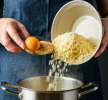
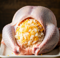
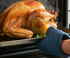

Primero debemos poner dos tazas de agua en una olla y cuando este hirviendo mas o menos dejaremos el arroz 15 minutos hasta que absorba bien toda el agua, juntaremos el arroz con el queso cheddar, pan rallado, huevo batido, mantequilla derretida, cebolla, ajo, sal y pimienta.´Mezcla bien hasta obtener una consistencia húmeda.

Preparación del pavo
Precalienta el horno a 180°C, Lavaras bien el pavo por dentro y por fuera, sazona la cavidad con sal y pimienta, continuaras rellenando la cavidad del pavo con la mezcla de arroz y queso, lo llevaremos al horno a 75º.

Servido
Despues de 2 horas en el horno a 75º, retiraremos el pavo del horno y estara listo para ser servido, delicioso con queso y arroz en su interior.
